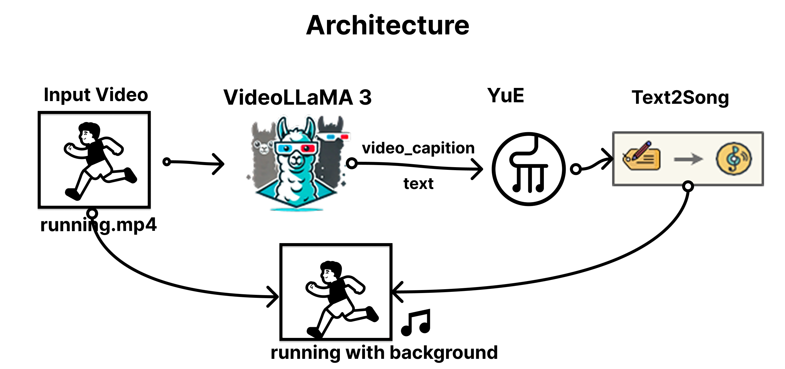

Video-to-BackgroundMusic: End-to-End Framework
Automatic Captioning and Music Generation for Video Content
Abstract
본 논문에서는 비디오 콘텐츠에 대한 자동 캡셔닝과 그에 맞는 배경음악 생성을 위한 통합 프레임워크를 제안한다. 우리의 접근 방식은 최첨단 비디오 이해 모델인 VideoLLaMA3와 텍스트 기반 음악 생성 모델인 YuE를 결합하여 비디오의 시각적 내용을 분석하고 이에 적합한 배경음악을 자동으로 생성한다. 제안된 워크플로우는 입력 비디오를 VideoLLaMA3 모델에 전달하여 비디오의 내용, 분위기, 감정을 설명하는 캡션을 생성하고, 이 캡션을 YuE 모델에 입력하여 비디오의 시각적 내용과 조화를 이루는 배경음악을 생성한다. 다양한 장르와 분위기의 비디오에 대한 실험 결과, 우리의 프레임워크는 비디오 내용에 적합한 고품질 배경음악을 생성할 수 있음을 보여주었다. 이 연구는 비디오 콘텐츠 제작, 자동 멀티미디어 콘텐츠 생성, 그리고 접근성 향상을 위한 응용 프로그램에 기여할 수 있다.
Approach

수정 전 architecture 좀더 멋지게.. 있어보이게.. 만들어야함ㅠㅠ 넘 귀찮당..
데모 비디오
- 원본 비디오
- 결과 비디오